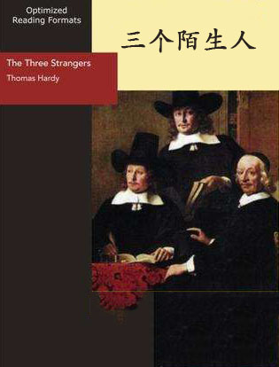
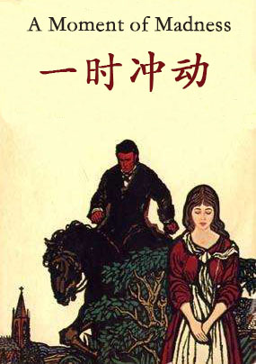

双语小说
收录中英文双语小说300多部，包括世界经典名著、社会小说、悬疑小说等短篇和长篇小说，可按照初中难度、高中难度和大学难度分类阅读，每部小说都有分段中英文对照，点击单词可查看中文翻译。

阿拉丁和神灯（简化版） (Aladdin And The Enchanted Lamp)
作者：未知 (unknow) [阿拉伯]
阿拉丁是一个懒惰的孩子。他不喜欢劳动，成天和朋友们在市场上玩耍。他和母亲都很穷，经常挨饿。但阿拉丁从来都不工作，也不帮助他的母亲。有一天，阿拉丁的叔叔阿巴那扎尔来到这个城市。“我很有钱。”他跟阿拉丁和他母亲说。他给了他们一些金子，给阿拉丁买了一件漂亮的新外套，还说想继续帮助他们。阿拉丁非常高兴。但其实阿巴那扎尔并不是阿拉丁的叔叔。他是来自摩洛哥的一位魔法师，他想找到一盏神灯。他知道那盏灯在一个阿拉伯城市附近的一座神奇的地下花园里，只有这个城市里的一个穷孩子能进入花园找到那盏神灯，这个男孩的名字叫阿拉丁。星运里的错 (The Fault In Our Stars)
作者：约翰·格林 (John Green) [美国]
原著名《无比美妙的痛苦》。重病中的女孩海蓁，爱上了同病相怜的男孩奥古斯塔斯，死神的身影伴随着青春的曼妙，两个年轻人在让人羞赧的生理折磨和情感考验中互相依偎。海蓁想在生命的最后时刻，完成荷兰之旅，男孩忍着病痛，帮她完成了心愿，就告别了这个世界，在有限的日子里给了女孩永远的爱。女孩读着男孩留下的信，凄然泪下，苦难中两颗纯洁心灵的抚慰，残酷中青春之花的绽放，作品将爱情与死亡写得如此平实而奇异，催人泪下，在洗涤人类情感的同时，让人体味生命和爱情的美妙与痛苦。
愤怒的葡萄 (The Grapes of Wrath)
作者：约翰·斯坦贝克 (John Steinbeck) [美国]
本书出版之后，引起美国各州统治集团的恐慌。许多州禁止小说发行；有的议员出来指责；俄克拉何马州阻止电影公司去拍电影。是左翼文学一部重要的作品。左翼文学是美国世纪三十年代的文学主流。一般说，凡是反映了当时群众斗争的作品，都属于左翼文学之列，包括党员作家和像斯坦贝克那样的非党作家的作品。斯坦贝克以其切身的生活经历描写了经济危机期间广大农民的苦难和斗争，代表了左翼文学一个重要的方面。 内容简介：经济危机时期中部各州农民破产、逃荒和斗争为背景。俄克拉何马和邻近的得克萨斯、堪萨斯、阿肯色各州的农民负债累累，土地被大公司没收，无家可归，只得向西迁移，想在加利福尼亚州寻找出路。小说以约德一家为代表，记叙了他们一家十二口从俄克拉荷马州向加利福尼亚州逃荒的艰难经历。他们将家中的一切变卖后，换来一辆破旧的汽车，一家坐车向西逃荒。途中年轻的诺亚和康尼则在半路上开了小差。到了加州，一切并不像他们想像的那样美好，等待他们的仍然是失业、饥饿和困苦。那里的农场主利用剩余的劳动力压低佃农助工资，各地势力敲诈勒索和迫害流浪的农民。于是农民愤怒了，他们团结起来，奋起抗争。“愤怒”便是对导致人们贫困的不公的社会制度的强烈抗议。沙洲之谜（简化版） (The Riddle of the Sands)
作者：彼得·霍金斯 (Peter Hawkins) [英国]
弗里西亚群岛位于荷兰和德国所属的北海沿岸。在群岛附近航行有时会有危险，尤其是在恶劣天气下，因为这里有不少沙洲，涨潮时会隐藏在浅水下面。沙洲间的航道很窄，不易察觉，而沙洲本身也会随着海风和潮汐发生改变。年轻的阿瑟·戴维斯是个航海爱好者，他热情勇敢、技术娴熟，喜欢驾着他的“达尔茜贝拉”号游艇穿梭于这片复杂、危险的海域。戴维斯邀请他的朋友卡拉瑟斯从伦敦赶来，二人一起出海度假，可在船上待了几天之后，卡拉瑟斯才弄清此行的真正目的。看来，他们是要去解开一个谜，还要解开一个名叫多尔曼的男人身上的疑团。两个好朋友开始了调查——与此同时，他们也引来了一位德国炮艇艇长的密切关注。故事发生在1902年，因此这段海岸的危险之处不仅仅在于沙洲。第一次世界大战的阴云不断汇聚，年复一年，慢慢地愈来愈暗……
硅谷钢铁侠 (Elon Musk)
作者：阿什利·万斯 (Ashlee Vance) [美国]
埃隆·马斯克是风格独具的梦想家，也是眼光独到、一再开创新商业模式的企业家。从PayPal，到特斯拉、Space X、太阳城，他的创业历程中遭遇了无数棘手的事件，但是每一次突破都令全球惊艳。无论钟情于什么领域，他都可以展现出惊人的专注力。44岁的马斯克已经涉足颠覆互联网、 金融、汽车、航空以及能源业。他近乎疯狂的对科技的专注，使他成为目前最成功的连续创业者和科技创业家。
三个陌生人 (The three strangers)
作者：托马斯·哈代 (Thomas Hardy) [英国]
故事从一座孤零零的村舍的敲门声说起。屋内灯光明亮、气氛欢快，人们伴随着音乐翩翩起舞，玩得很开心。屋外大雨滂沱，顺着山间小路走来的陌生人凝视着灯火通明的窗户。他是该继续赶路，还是停下来歇歇、坐在温暖的炉火边吃点东西呢？一个又一个陌生人的来到，会给牧羊人的生活带来什么改变呢？
牧羊人所见 (What the Shepherd Saw)
作者：托马斯·哈代 (Thomas Hardy) [英国]
一个牧羊少年惊恐地睁大了双眼，从他的小棚屋中往外窥视一个女人和一个并非她丈夫的男人秘密约会。在接下来的几个夜晚发生的事情，改变了他的一生。究竟发生了什么样的事情呢？
一时冲动 (A Moment of Madness)
作者：托马斯·哈代 (Thomas Hardy) [英国]
一个女孩和一个她不喜欢的老男人结婚了，为了不和他结婚她在结婚的前一天找了另外一个人嫁了，苍天不尽人意她嫁的人死了，所以她只好和老男人结婚。婚后就一直不幸福，而且这个老男人也有四个女儿，但是最后他们就幸福的生活在一起了？
风中奇缘（简化版） (Pocahontas)
作者：蒂姆·维卡里 (Tim Vicary) [英国]
1607年，英国人来到北美洲的弗吉尼亚，他们想在这片新大陆上开始崭新的生活，并在这里安家落户。他们建造了一座城镇，取名为“詹姆斯敦”，它是以英格兰国王詹姆斯一世的名字命名的。在这些英国人看来，弗吉尼亚是一个全新的世界，而对于北美洲的印第安人来说，就没什么新鲜的了。印第安人生活在这里，他们的祖祖辈辈们很久前就居住在这里了。这里是他们的国度，是他们的家园。印第安人可不喜欢这些来自大洋彼岸的白人们。在这些英国人当中，有一个叫约翰·史密斯的人乘着一艘小船逆流而上，印第安人发现了他，并把他带到首领波瓦坦酋长那里。印第安人本想杀了他，但波瓦坦有一个漂亮的女儿，名叫波卡洪塔斯。从她凝望着约翰·史密斯那双蓝蓝的眼睛的那一刻起。一段有关两个国家、两个人以及一段不了情的广为人知的故事就这样拉开了序幕。
名利场（简化版） (Vanity Fair)
作者：威廉·梅克比斯·萨克雷 (William Makepeace Thackeray) [英国]
为了掌握自己的命运，出身贫寒的贝姬不择手段，谄媚奉承，走小道钻后门，飞上高枝。而富商的女儿阿梅莉亚温柔善良，驯顺地随命运拨弄，面对纯洁的爱情，却视而不见。两人的命运，几经坎坷，几经风雨。小说结尾写道：“啊，人类欲望如此虚荣与荒唐！尘世之中，我们谁是真正快乐的？我们谁能称心如意？又或，在遂了心愿后，真正感到心满意足？”